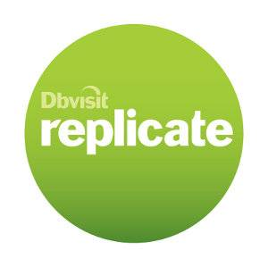

|
|
This was first published on https://blog.dbi-services.com/oracle-et-dbvisit-replicate-pour-migrer-sans-arret-de-service-et-sans-stress (2014-02-13)
Republishing here for new followers. The content is related to the the versions available at the publication date

Je viens d’assister au Webinar Zero Downtime Migration pour Oracle, présenté par Chris Lawless qui est récemment passé de Product Manager Golden Gate à Product Manager Dbvisit. Je vais détailler ici un point très important évoqué par Chris Lawless. La migration par réplication n’est pas seulement envisagée pour éviter un arrêt de service. Arrêt nécéssaire lors de la migration proprement dite (qui peut aller de quelques minutes à plusieurs heures en fonction de la taille et de la complexité de la solution) mais aussi pour les test avant la décision de Go-NoGo de réouverture du service sur la cible.
Une migration par réplication, c’est d’abord pour éviter du stress, des coûts et du risque.
Un upgrade classique (dbua par exemple) a l’avantage de garantir l’intégrité des données sans avoir à impliquer les équipes applicatives: pas besoin d’avoir la liste des schemas, des synonymes ou db links, ni de vérifier s’il y a des opérations particulières (nologging) ou des types de données particuliers (XMLTYPE). Pas besoin de se poser des questions sur les triggers, les delete on cascade, etc.
Bien sûr les equipes applicatives seront impliquées pour les tests. Mais lors de la migration le DBA peut s’en occuper sans savoir ce qu’il y a dans sa base. C’est la raison pour laquelle c’est la méthode la plus utilisée. Il n’y a que lorsque la durée de l’arrêt de service peut poser un problème qu’on doit envisager une autre solution. Car un upgrade classique peut prendre une heure (suivant la taille du dictionnaire).
Une migration (lorsque il n’y a pas que la version d’Oracle qui change, mais le stockage, le serveur, la plateforme) peut être plus longue. Des solutions existent pour diminuer cette durée (Transportable Tablespaces, par exemple) mais bien sûr, l’opération sera plus complexe. Et plus complexe veut dire plus de temps, plus de risque, plus de stress.
Alors vient l’idée de migrer par réplication, sans arrêt de service, sans risque, sans stress.
Là, le DBA ne peut pas le faire à l’aveugle. C’est un projet à mettre en place avec les equipes applicatives pour déterminer quoi et quand répliquer. C’est d’ailleurs à mon avis un avantage: la migration est aussi une bonne occasion de faire un peu de ménage. Et pourquoi pas en profiter pour passer en UTF-8 aussi ?
Et il est de toute façon assez facile de tester si notre application supporte la réplication logique. Car bien sûr, le but n’est pas de passer 2 mois à résoudre des problèmes de réplication sur des triggers, contraintes on cascade, vues matérialisées, types de colonnes non supportés, etc.
Alors, pourquoi moins de risque et moins de stress ? Parce qu’on peut mettre en place la réplication sans déranger la production, et la laisser tourner plusieurs jours voir semaines. On ne va décider de basculer l’application sur la cible que lorsque tout est prêt et validé.
La migration se passe en 3 phases:
Chris Lawless a aussi répondu à deux questions sur les licences et sur le support de la 12c
Au niveau du coût, un produit comme Dbvisit Replicate, qui a déjà un prix de licence tout à fait correct, peut aussi se louer pour une durée limitée si on le souhaite: par exemple pour les 3 mois du projet de migration. Et la version trial de 30 jours peut même permettre de faire un Proof Of Concept sans frais afin de valider la compatibilité de l’application avec la réplication logique.
Alors pourquoi ne pas passer 1 jour à tester la réplication de notre application ? Dbvisit Replicate peut s’installer en une heure et se configurer rapidement pour répliquer un schema en temps réel. Ce qui permettra d’évaluer la charge de configuration en fonction du nombre d’exceptions à gérer.
Oracle 12c étant une cible supportée, c’est une solution envisageable en venant de n’importe quelle version supérieure à 9.2. Une cible Pluggable Database n’est pas encore supportée, mais de toute façon, Dbvisit s’adresse surtout à des coûts réduits, en Standard Edition.
Alors, pour apaiser la peur de passer en 12c (peur historique des premières releases d’une nouvelle version), pourquoi ne pas répliquer sa prod 10g ou 11g pendant un mois (version trial) et tester tranquillement son appli sur la cible 12c avec des données de prod ?